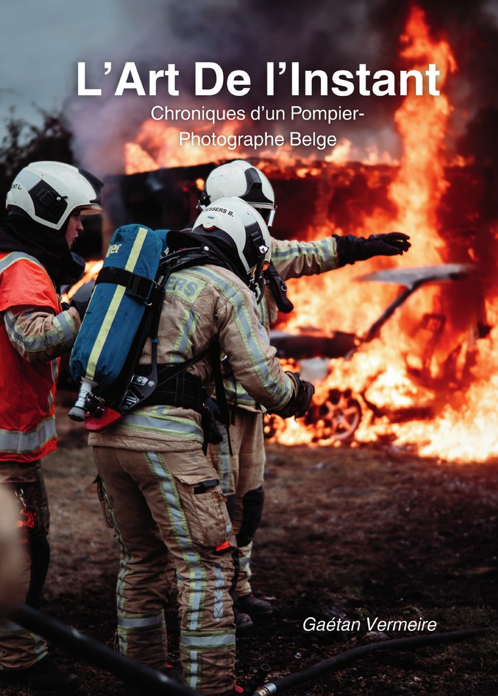
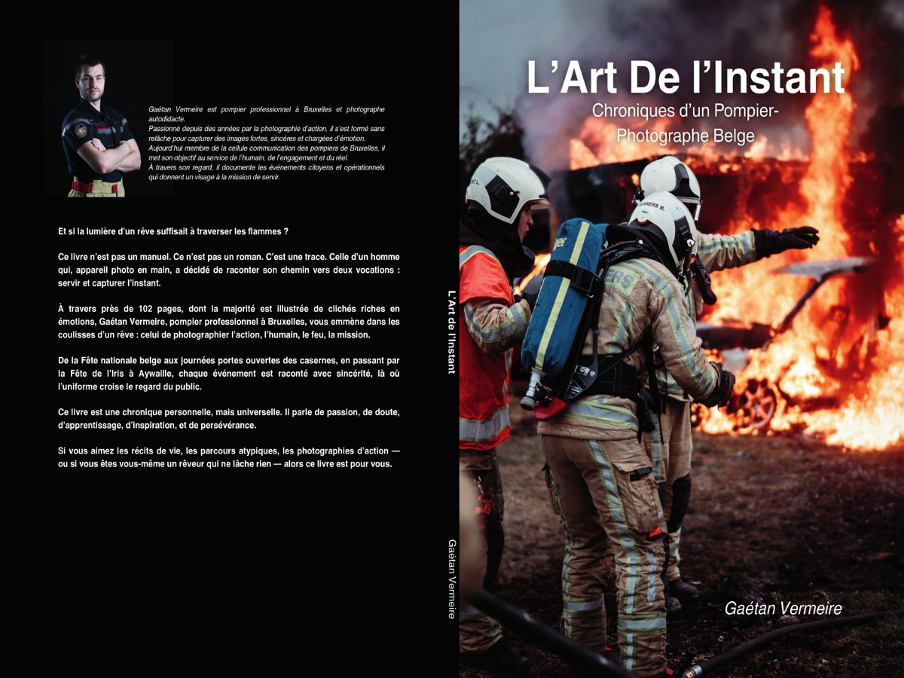

Carnet de garde
Un carnet pour garder trace des journées, interventions et apprentissages.
Lookfavor Académie
Une porte d’entrée vers l’univers éditorial de Gaétan Vermeire : pompier professionnel, photographe et auteur.


Livre disponible à l’achat
Chronique d’un pompier-photographe belge. Un livre sur l’action, l’humain, la lumière et ce qui reste après l’instant.
Choisir la version
Version francophone : L’Art de l’Instant.
À venir
Des supports pensés autour de la transmission, de la préparation au métier et de la mémoire de garde.
Un carnet pour garder trace des journées, interventions et apprentissages.
Un support pour accompagner les candidats dans leur préparation.
Méthode, motivation et progression pour entrer dans le métier avec lucidité.